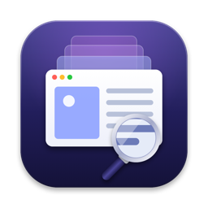

BackframePrivacy Policy
No accounts, ads, analytics or tracking, and none of your work is sent to us. The license and update checks are described below.
This policy explains how Backframe (“the app”), a Mac app: an encrypted, searchable history of what was on your screen, kept on your Mac, developed by Kevin Fitzgerald, handles information.
Information we collect
None. Backframe does not collect, store, sell or share personal information on any server, and it does not include analytics, advertising, crash-reporting or tracking tools of any kind.
Information stored on your Mac
To work, the app keeps the following on your Mac:
- Saved frames, only while capture is switched on (it starts off): a downscaled screenshot (at most 1600 pixels wide) of the display you're using, kept only when the screen changed, plus a small thumbnail
- The text read from each frame on your Mac by Apple's Vision, with each line's position, and the window title, app name and time it was saved
- A search index made of keyed hashes of word beginnings (never the words themselves)
- Your settings (capture on or off, how often to look, the pause shortcut, excluded apps and title words, how long to keep frames and the disk cap)
- Two items in your Mac's login Keychain: the random encryption key for your history, and your license key or free-trial start date
Frames, text, the index and settings are in ~/Library/Application Support/Backframe on your Mac (history.sqlite, frames/ and config.json). Each frame's picture, thumbnail, text, window title and app name are encrypted with AES-256-GCM using keys derived from one random key that is made on your Mac and kept in your login Keychain and not synced. When frames were saved, how big they are and which came from the same app (by a code, not its name) is not hidden, and config.json, with your excluded apps and words, is not encrypted. A backup or migration of your Mac can copy the history folder and your Keychain. Frames older than your limit (30 days by default) or past your disk cap (5 GB by default) are deleted automatically; Delete Everything removes the whole history and its key.
Your Mac
Backframe runs in Apple's App Sandbox and may write only its own folder, ~/Library/Application Support/Backframe. It looks at the screen only while you have capture switched on, using macOS's Screen Recording permission, and skips the apps on its excluded list (Passwords, Keychain Access, 1Password, Bitwarden, KeePassXC, LastPass, Enpass and Messages to start with), windows whose titles contain an excluded word (banking, bank account, credit union and brokerage to start with), anything while a password field is active, a locked or sleeping screen, idle time (after 3 minutes unless you change it) and its own window. Private windows are skipped when the browser marks them in the window's title (Firefox, Chrome, Edge and Brave, in English); Safari's are not, so add Safari to the excluded apps or pause capture. An app it skips is left out of the picture even behind other windows. Skipping has gaps: a notification, another app showing the same text, or a password shown as plain text can be saved. It saves still pictures and their text only: no audio, no keystrokes and no pointer (text you type is in the picture when it is on screen). The text in each frame is read on your Mac; Backframe doesn't upload, sync or share it. To stop it, choose Turn Capture Off, or switch Backframe off in System Settings › Privacy & Security › Screen & System Audio Recording.
Network
Backframe is sold directly through Gumroad, and its only network requests are the license check (when you enter a key, then each time the app opens and about once a week: Gumroad gets your key, and our license page, licence.fitztoppicks.com, gets a fingerprint of the key, not the key itself, to see whether it was reset; both get the app’s product ID), checks for app updates at fitztoppicks.com and the list of our other Mac apps, downloaded from fitztoppicks.com when you open it (at most once a day; the same file for everyone). None of them sends your frames, their text, your searches or anything about what was on your screen.
Updates and license checks
Backframe, downloaded directly from Gumroad or fitztoppicks.com and signed with Apple’s Developer ID, checks for app updates with Sparkle, a standard open-source updater: about once a day it downloads a small update list (an appcast) from fitztoppicks.com, and it downloads an update from fitztoppicks.com only when one is available and you choose to install it (or have turned on automatic updates).
Until you enter a license key, Backframe contacts neither Gumroad nor our license page. When you enter one, it sends that key and the app’s product ID to Gumroad to verify it, and checks it again each time it opens and about once a week while it stays open. Gumroad’s answer (including the email address you bought with) is kept with the key in your Mac’s Keychain. With each of those later checks it also asks our license page, licence.fitztoppicks.com, whether the key was reset there (the page is where you free a Mac). That question contains only the app’s product ID and a fingerprint of the key (a one-way SHA-256 code made from it), never the key itself, your name or your email address, and the page doesn’t save it.
None of these requests contains anything about your files or how you use the app. As with any web request, the server also sees your internet address and ordinary details such as the app’s name and version, your macOS version and your language.
Purchases
Backframe is sold directly through Gumroad, which handles payment and sends your receipt and license key; we never see your payment details. What the license check sends is under Updates and license checks above.
Children’s privacy
Because the app collects no personal information from anyone, it does not knowingly collect personal information from children.
Changes to this policy
If this policy changes, the new version will be posted on this page with a new effective date. If the app ever begins collecting data, this policy will be updated before that happens.
Contact
Questions about this policy or the app: help@fitztoppicks.com.